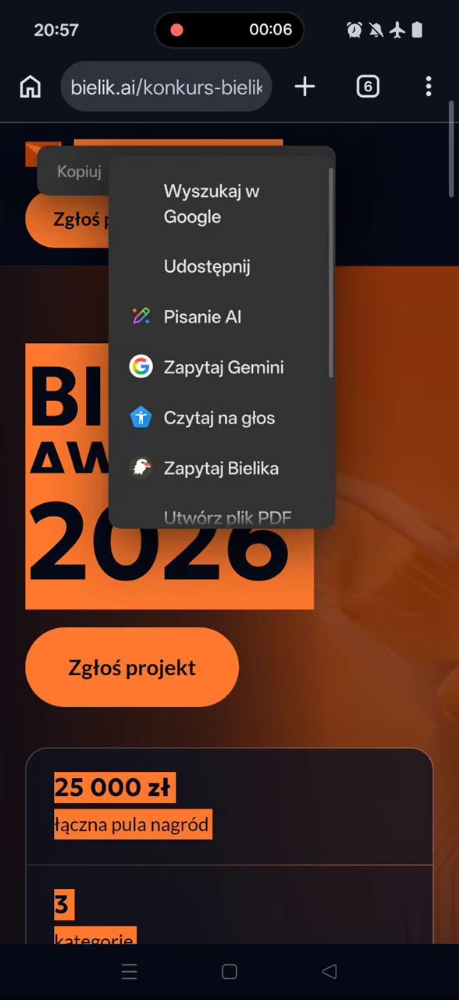
BIELIK ONECLICK · ANDROID
Bielik Edge-AI One Click
Bielik to polski model językowy, który dzięki tej aplikacji działa lokalnie na Twoim telefonie z Androidem.
- Łatwa instalacja — OneClickPobierz APK, wybierz model i otwórz czat.
- Funkcje AI i więcejCzat, streszczanie, tłumaczenie, TXT i statystyki.
- 100% offlineRozmowy i analiza tekstu działają na telefonie.
Po pobraniu modelu. Dyktowanie może wymagać internetu.
Funkcjonalności
Dziewięć ekranów — przesuń w bok palcem lub użyj strzałek.
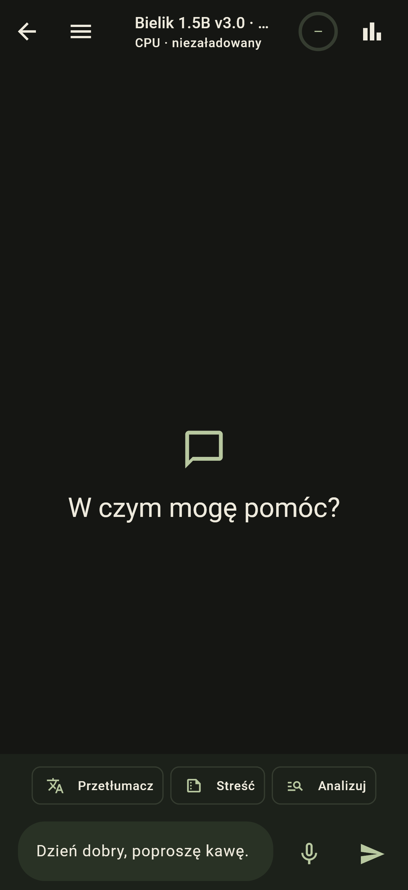
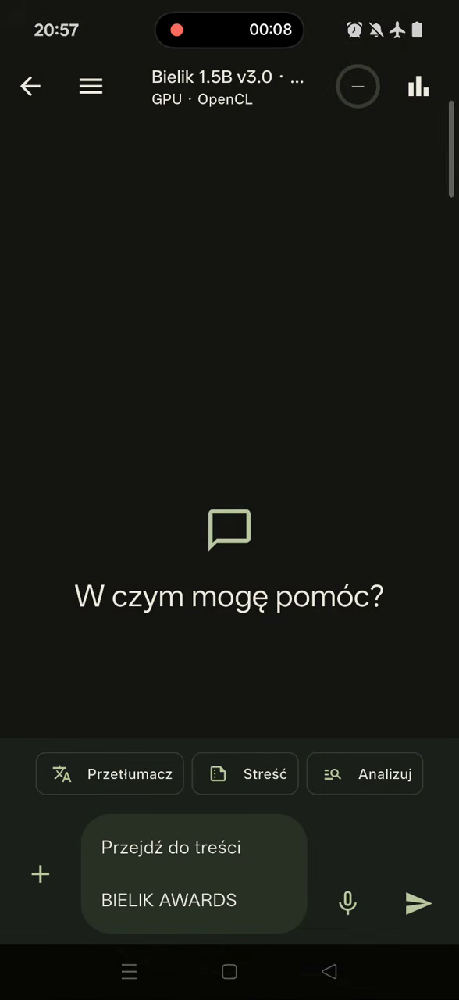

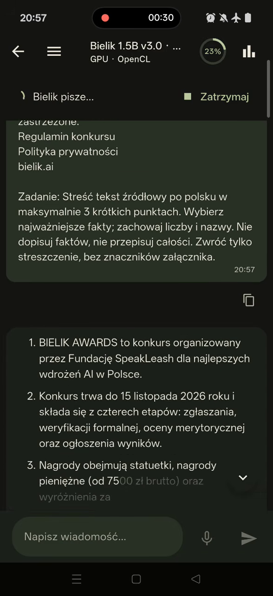
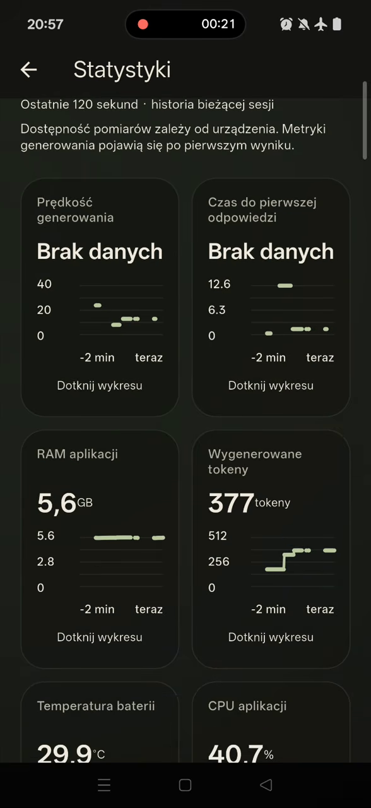
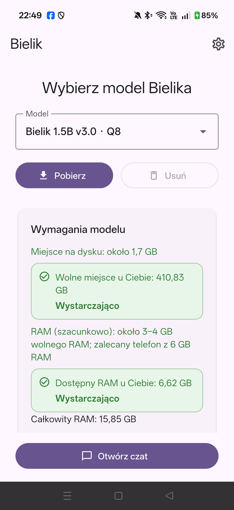
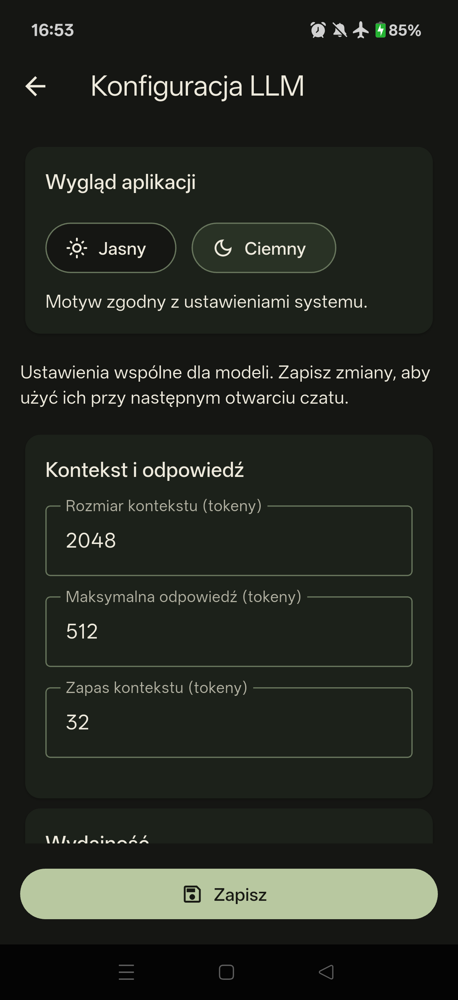
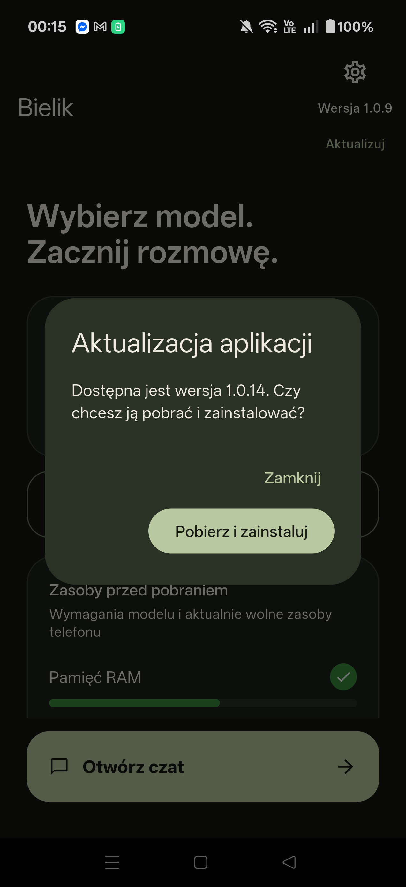
ZAZNACZ → PRZENIEŚ → STREŚĆ
Twój tekst. Odpowiedź Bielika.
Wybierz „Zapytaj Bielika” w menu zaznaczonego tekstu. Potem kliknij „Streść”.
Klatki z rzeczywistego nagrania · Bielik 1.5B · GPU OpenCL · tryb samolotowy. Przekazujemy zaznaczony tekst; dostępność menu zależy od aplikacji.
Obejrzyj streszczanie na YouTube ↗ZAZNACZ → WYBIERZ JĘZYK → PRZETŁUMACZ
Ten sam tekst. Inny język.
Po „Zapytaj Bielika” wybierz „Przetłumacz”, a następnie polski lub angielski.
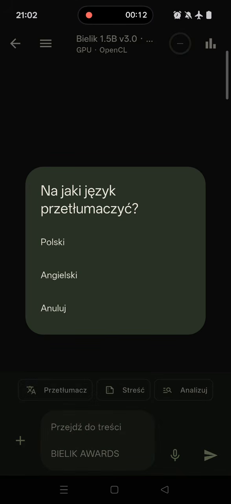
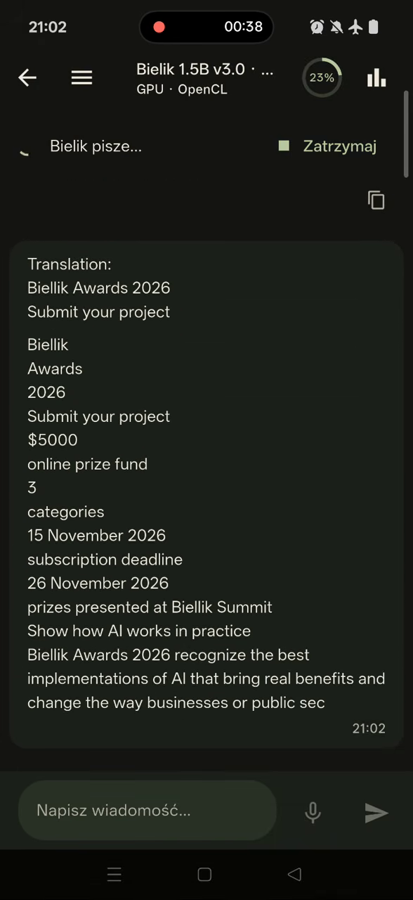
Klatki z rzeczywistego nagrania · Bielik 1.5B · GPU OpenCL · tryb samolotowy. Tłumaczenie modelu wymaga weryfikacji ze źródłem.
Obejrzyj tłumaczenie na YouTube ↗MAŁY PLIK. WIELE MOŻLIWOŚCI.
Dodaj TXT i zapytaj o treść.
Plus dodaje plik. Nazwa otwiera podgląd. „Przetłumacz” wysyła treść do Bielika.


Plik demonstracyjny: bielik-plan.txt · 172 B · UTF-8 · GPU OpenCL · tryb samolotowy. Wynik tłumaczenia wymaga sprawdzenia ze źródłem.
SPRAWDŹ → POBIERZ → ZAKTUALIZUJ
Nowa wersja bez szukania APK.
Naciśnij „Aktualizuj” pod numerem wersji. Aplikacja pobierze nowe wydanie, a Android poprosi o potwierdzenie instalacji.
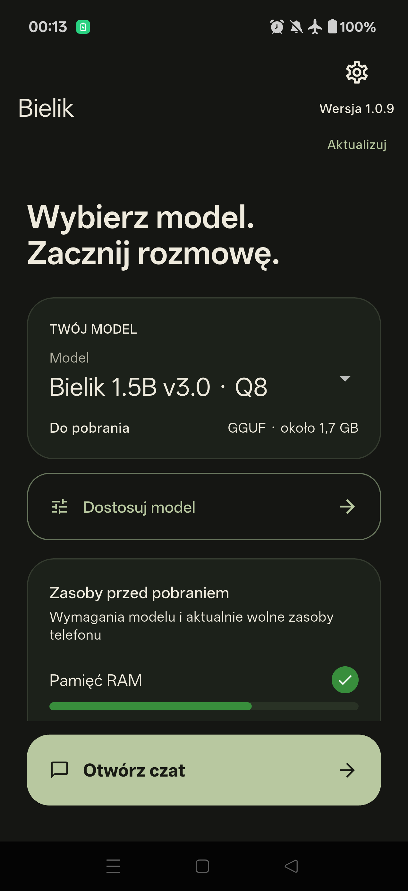
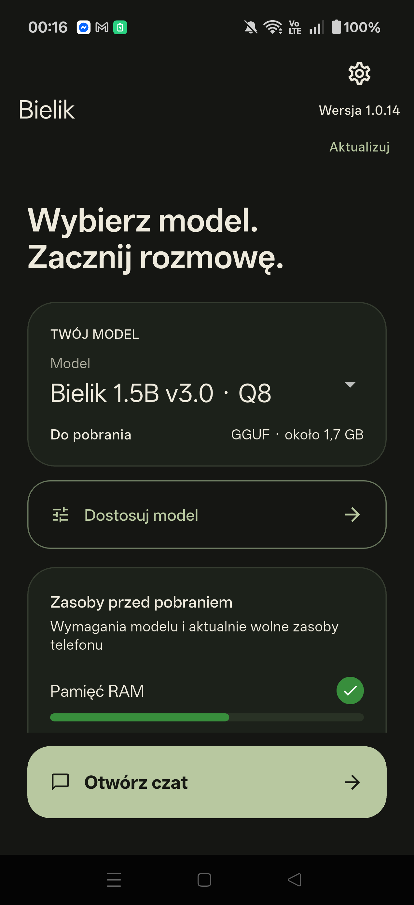
Rzeczywista aktualizacja na telefonie: 1.0.9 → 1.0.14 · wydanie APK z GitHuba. Pobieranie wymaga internetu; przy pierwszej aktualizacji Android może poprosić o zgodę na instalowanie aplikacji z tego źródła.
NAGRANIE Z APLIKACJI
Zobacz demo.
Streszczanie — offline · GPU OpenCL
Tłumaczenie — offline · GPU OpenCL
Przegląd aplikacji — tryb samolotowy
Krótki czat — tryb samolotowy
Plan rozwoju
Kolejne kierunki rozwoju aplikacji.
- Wsparcie PDF W trakcie
- iOS W trakcie
- Akceleracja GPU50/50OpenCL: OnePlus 15 (CPH2747), Pixel 8 Pro · Samsung Galaxy S24+ — nie działa · Vulkan — bez testów
- Akceleracja NPU W trakcie
ZACZNIJ NA ANDROIDZIE
Pobierz aplikację
- 01Zainstaluj APK
- 02Pobierz model
- 03Otwórz czat
Dołącz do zamkniętych testów Google Play!
- Dołącz do grupy testerów kontem Google, którego używasz w Sklepie Play.
- Zainstaluj Bielik OneClick ze Sklepu Play.
Publikacja w Google Play: grudzień 2026.
Problem z dołączeniem? Napisz: e-mail.
damian.panasiuk.console@gmail.com
Bezpośrednie pobieranie najnowszego stabilnego wydania · Android ARM64.
Model pobierasz osobno: 1.5B ≈ 1,7 GB, 4.5B ≈ 5,06 GB.
Ekrany z OnePlus 15 · Android 16 · CPU i GPU OpenCL. Sekcje streszczania i tłumaczenia pokazują klatki z nagrań w trybie samolotowym.
Co nowego?
Zmiany w najnowszym stabilnym APK — po polsku.
Archiwalne wersje APK
Stabilne wydania z opisem zmian i plikiem do pobrania. Instalacja starszej wersji może wymagać odinstalowania aplikacji i usunąć jej dane.
Rozwijaj z nami
Chcesz dodać model do aplikacji? Dopisz go w bielik_models.dart.